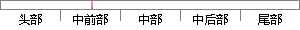

（3）页面设计：网页设计在网站建设中占据了额很重要的地位，良好的页面设计能够有效地提高用户的使用体验，同时还能够提高用户粘度。
片段位置图

相似结果|
相似片段 1：体验的网页能够在瞬间吸引用户、取悦用户，是决定用户是不是会继续使用这个网站的最重要原因。而在用户体验的考察内容中，用户的视觉体验、情绪体验和功能体验情况是考察产品或服务的最直观、最重要的表现形式。因此，从这三个层次来研究网站页面设计不仅体现了用户体验和设计体验，同时也符合当前网站页面设计发展趋势。
|
※ 片段修改建议 ※
近似词参考：- 设计：计划
- 设计：计划
- 占据：占有 盘踞 占领
- 重要：主要 紧张 首要
- 地位：职位地方
- 良好：杰出 精良 优秀 优越 优良
- 设计：计划
- 能够：可以或许
- 提高：进步
- 使用：利用
- 能够：可以或许
- 提高：进步
系统自动生成语句：（3）页面计划：网页计划在网站建设中占有了额很主要的职位地方，杰出的页面计划可以或许有效地进步用户的利用体验，同时还可以或许进步用户粘度。
注：本片段修改建议为系统自动生成，仅供参考。